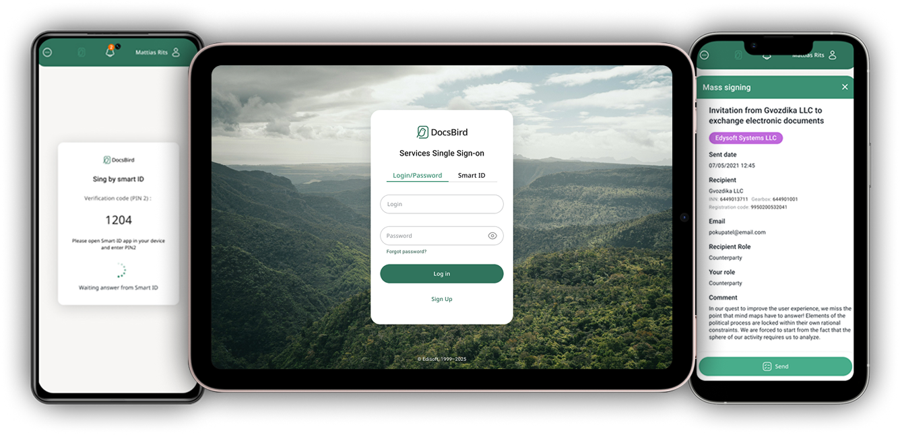

Ключевой сценарий: регистрация как конкурентное преимущество
Версия 1.0
Проблема
Итерации
Версия 2.0
7 шагов
→ много отказов
→ Упрощение
→ 3 шага
Компактная мобильная версия
Те же компоненты UI-kit в узком формате Android

Сценарии в интерфейсе — в динамике
Два ключевых потока после упрощённой регистрации: создание соглашения и работа с фильтрами.
Создание соглашения
Фильтры и поиск
Сценарии в интерфейсе
Упрощённые B2B-флоу: счета и подпись
Меню создания счёта
Полный экран с действиями в DocsBird

Создание счёта — один из ключевых сценариев после регистрации
Подпись Smart ID
Юридически значимое подписание без лишних шагов

Подпись встроена в поток — без лишних переходов между экранами
«Сложные B2B-флоу превратились в простые self-service решения. Сократили 7 шагов до 3, сохранив при этом все регуляторные требования.»
Метрики: Dropout rate снизился на 45%, среднее время регистрации — с 12 до 4 минут